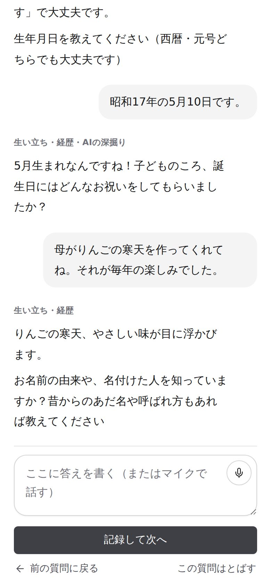
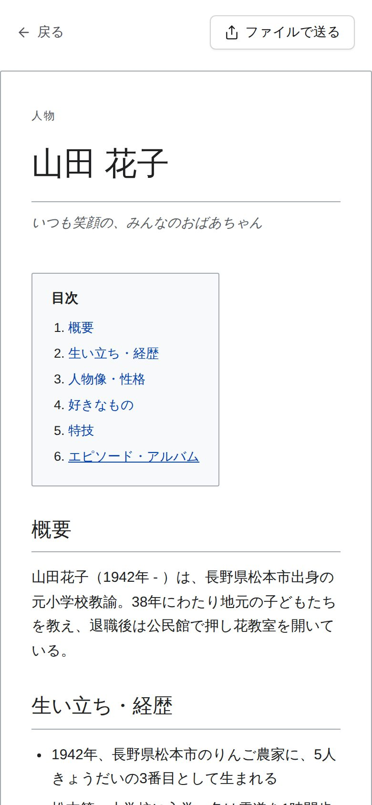
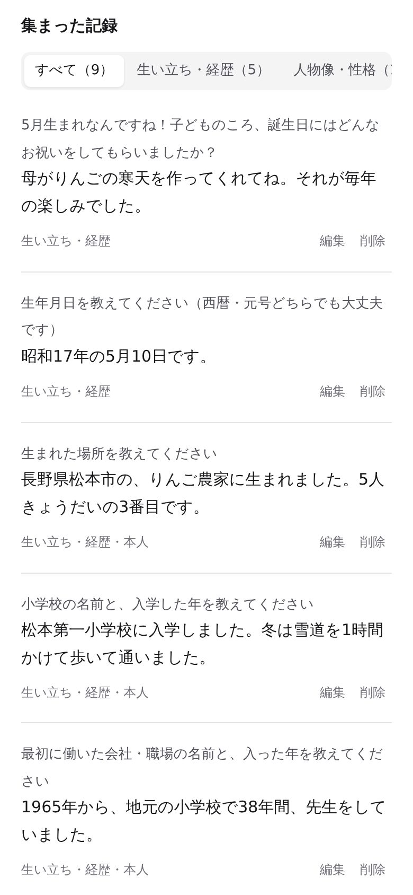
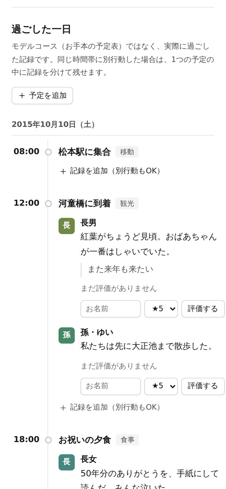

Wikipediaに載るのは、有名人だけ。でも――
おじいちゃんにも、
Wikipediaを。
AIのインタビュアーが質問を読み上げて、話を聞きます。聞かれるままに答えるだけで、生い立ちも、仕事も、好きなものも、Wikipediaのような「その人だけのページ」にまとまります。

STORY
知っているようで、知らない。
家族の人生のこと。
父がどんな仕事をしてきたのか。祖父が若いころ、何に夢中だったのか。祖母はどこで生まれて、どんな子どもだったのか。毎日顔を合わせていても、改まって聞く機会は意外とありません。
おもいでWikiは、その「改まって聞く」を、AIのインタビュアーが代わりにやってくれるアプリです。質問に答えていくと、思い出が少しずつたまって、いつの間にか一冊の人物記事のようなページになります。
「聞いておけばよかった」に、なる前に。
FEATURES
インタビュアーに聞かれる感じで、
答えるだけ。
質問を読み上げて、
声で答えられる
文字を打つのが苦手でも大丈夫。質問を聞いて、話すだけ。話し終わりに「次」と言えば、ボタンを押さずに次の質問へ進みます。
- AIが答えにあいづちを打って、もう一歩深く聞き返す
- 1回5問ずつ。疲れたらそこで終わり、続きはまた今度
- 答えた質問は二度と聞かないので、少しずつ増えていく

答えが、Wikipediaみたいな
人物ページになる
目次・概要・年譜・人物像・好きなもの。集まった答えをAIが読みやすい文章に整えて、その人だけの人物記事にします。
- 生い立ちや経歴は、年代順の年譜に
- プロフィール表や写真も添えられる
- ファイルにして家族に送れば、アプリがなくても読める

家族みんなで持ち寄って、
あとから書き直せる
本人の話だけでなく、子どもや孫が覚えているエピソードも一緒に残せます。誰が書いたかも記録されます。
- 集まった記録は、あとからいつでも編集・削除
- 送り合ったファイルを読み込めば、別の端末で続きを書ける

家族旅行の一日も、
みんなで残せる
金婚式の温泉旅行、帰省の思い出。時間ごとに、誰が何を感じたかを書き足していけます。別行動した時間も、それぞれの思い出として。
PRIVACY
家族の話だから、
安心して話せるように。
答えは、使っているスマホやパソコンの中だけに保存されます。アカウント登録もいりません。
聞くのは人生の思い出だけ。住所は市区町村まで、電話番号やメールアドレスのような連絡先は聞かない作りです。
AIの機能を使う前に、何をどこへ送るかを表示して確認します。使わない場合も、決まった質問と端末の声でインタビューできます。
SCENES
こんなときに。
FAQ
よくある質問
無料ですか？
はい、無料で使えます。アカウント登録もいりません。
スマホが苦手な親でも使えますか？
質問を読み上げて、声で答えられます。最初は家族が隣で一緒に始めてあげるのがおすすめです。1回に聞く数も3問・5問から選べるので、疲れないうちに終われます。
話した内容はどこに保存されますか？
使っている端末の中だけです。アプリの作り手のサーバーには保存しません。AIの機能を使うときだけ、質問づくりや読み上げのために文章が AI のサービス（OpenAI・Google）へ送られます。くわしくはプライバシーポリシーをご覧ください。
Android でも使えますか？
アプリは iPhone 向けですが、ブラウザ版は Android やパソコンでも使えます。
機種変更したらデータは消えますか？
「JSONで書き出す」や完成ページの「ファイルで送る」でファイルにしておけば、新しい端末の「ファイルを読み込んで合体する」で続きから使えます。